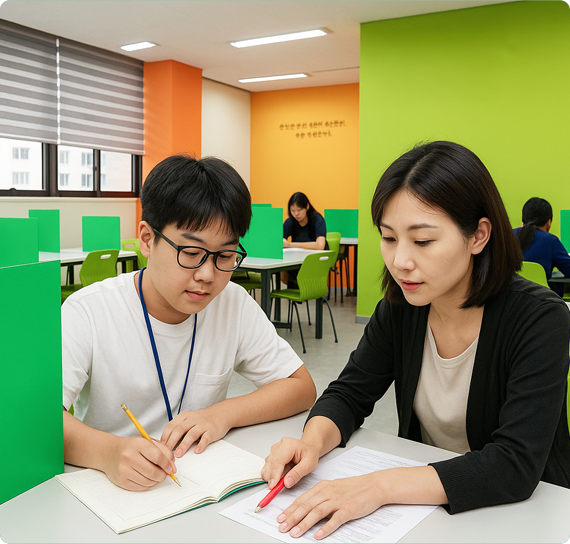

안녕하세요, 경산 사동 와와학습코칭 사동점입니다. 이번 주 고등 수학 코칭 현장을 학부모님들께 전해드립니다. 시험 기간을 앞두고 아이들이 어떻게 자기주도학습 루틴을 잡아가고 있는지 담았습니다.
개념부터 다시, 탄탄하게
수학은 한 번 개념이 흔들리면 다음 단원까지 무너지기 쉽습니다. 그래서 이번 주 사동점에서는 시험 범위의 핵심 개념을 학생이 직접 설명해 보게 했습니다. 말로 설명하지 못하는 부분이 바로 아직 이해가 덜 된 부분이기 때문입니다.
설명이 막히는 학생은 기본 예제로 돌아가 다시 다지고, 개념이 잡힌 학생은 곧바로 응용 문제로 넘어갔습니다. 같은 교실 안에서도 학생마다 진도가 다르게 흘러가는 것이 와와 코칭의 특징입니다.
오답 노트로 실력을 채웁니다
틀린 문제를 그냥 넘기지 않는 것이 실력 향상의 핵심입니다. 이번 주에도 학생들은 자신의 오답을 다시 풀며, 어느 단계에서 막혔는지 코치 선생님과 함께 점검했습니다.
- 계산 실수 → 풀이 과정을 또박또박 쓰는 습관 들이기
- 개념 부족 → 관련 개념으로 돌아가 복습
- 시간 부족 → 문제당 시간을 재며 푸는 연습
시험 기간, 스스로 계획하는 힘
사동점 학생들은 매일 등원하면 오늘의 학습 분량을 스스로 정하고, 하원 전에 코치 선생님과 점검합니다. 시험이 다가올수록 이 작은 루틴이 큰 힘을 발휘합니다. 누가 시켜서가 아니라 스스로 계획하고 실행하는 아이로 자라는 것 — 그것이 저희가 만드는 진짜 변화입니다.